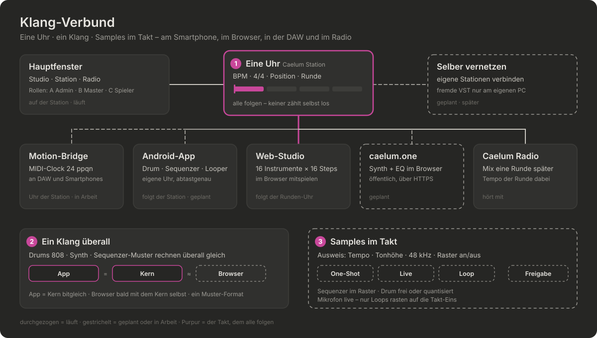
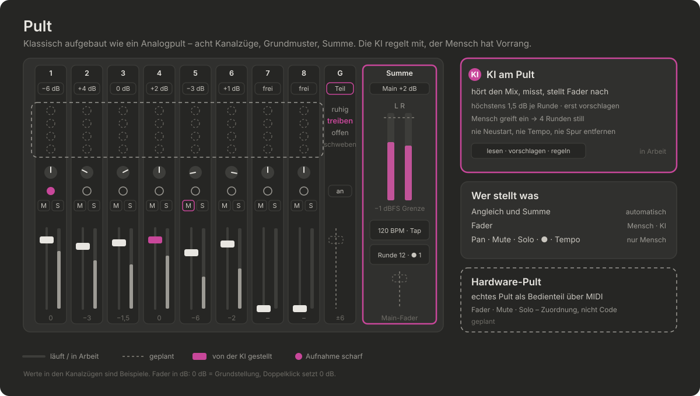
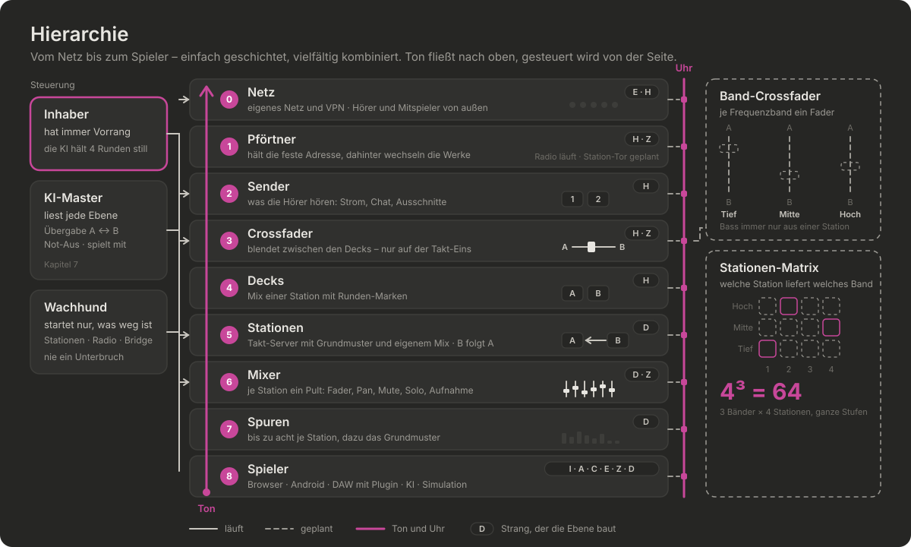
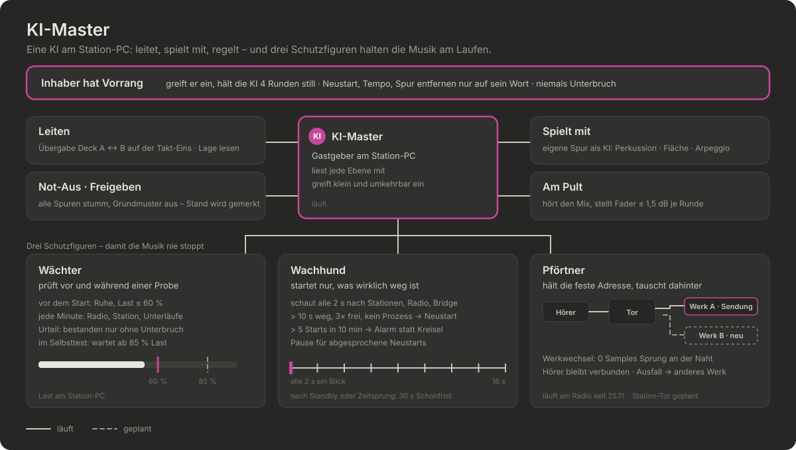

/sounddesign/motion-studio
Caelum Motion Studio · Bilder der Idee
Caelum Motion Studio
Bewegung wird MIDI. Acht Musiker, ein Loop.
Smartphone-Sensoren als Controller, Jam-Session über das Netz im selben Takt, live gestreamt. Jeder Kernteil lässt sich einzeln ansehen.
- 1Controller
- 2Wandlung
- 3Jam-Session
- 4Stream
1 Signalfluss Sensor → MIDI/OSC → Jam-Server → Live-Stream.

Zum Ansehen seitlich wischen.
- MIDI CC, Note, Pitchbend, OSC
- DAW optional
- Daten bleiben im lokalen Netz
2 Der Jam-Zyklus Gespielt in Zyklus n, gehört von allen in n+1 – Latenz wird zum Groove.

Zum Ansehen seitlich wischen.
- 1 Zyklus = 4 Takte = 8 s
- Der Loop stoppt nie
- Backing-Loop bei Leerlauf
3 Ein Audio-Kern Eine DSP-Engine in C++ – identisch als App, VST3-Plugin und im Browser.

Zum Ansehen seitlich wischen.
- Echtzeitsicher, ohne Fremd-Bibliotheken
- Null-Test: Differenz 0
- Android, VST3, Browser
4 Klang-Verbund Eine Uhr für alle Werkzeuge, ein Klang in App, Plugin und Browser – Samples laufen im Takt mit.

Zum Ansehen seitlich wischen.
- Station gibt den Takt vor
- Muster und Klang als gemeinsame Daten
- Samples: One-Shot, Live, Loop (geplant)
5 Das Pult Acht Kanalzüge, Grundmuster und Summe – eine KI regelt mit, der Mensch hat Vorrang.

Zum Ansehen seitlich wischen.
- Fader in dB, Mute, Solo, Pan
- Doppelklick = 0 dB
- EQ, Kompressor, Hall (geplant)
6 Hierarchie Vom Netz bis zum Spieler: neun Ebenen, eine Uhr – mit Band-Crossfadern 64 Kombinationen.

Zum Ansehen seitlich wischen.
- Ton steigt von den Spielern zu den Hörern
- Eine Uhr durch alle Ebenen
- 3 Bänder × 4 Stationen (geplant)
7 KI-Master Eine KI leitet, spielt mit und regelt – Wächter, Wachhund und Pförtner halten die Musik am Laufen.

Zum Ansehen seitlich wischen.
- Der Mensch hat immer Vorrang
- Wechsel nur auf der Takt-Eins
- Musik stoppt nie
♪ Hörprobe Sound-Design zum Anhören – der Punkt zeigt, was Tonhöhe und Filter gerade tun.
Die Hörprobe lädt beim Aufklappen. ▶ startet sie – kein Autostart.